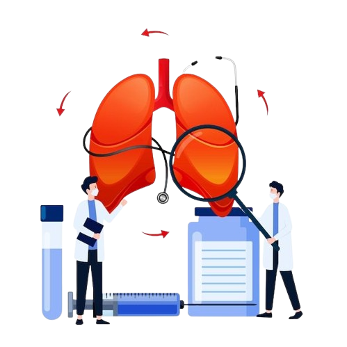

Cuidados com a Família
A saúde respiratória é um esforço coletivo. Em dias de baixa qualidade do ar, pequenos hábitos podem evitar complicações graves em longo prazo.
Checklist de Prevenção:
- ✅ Hidratação: Beba água constantemente para manter as mucosas úmidas.
- ✅ Ambiente: Use umidificadores ou toalhas úmidas in dias secos.
- ✅ Planejamento: Evite horários de pico (10h às 16h) para atividades externas.

Dicas de Proteção
🏠 Portas e Janelas
Mantenha janelas fechadas em horários de tráfego intenso para reduzir a entrada de fuligem.
🌱 Purificação Natural
Plantas como Lírio-da-paz e Jiboia auxiliam na filtragem natural do ar dentro de casa.
🧼 Higiene Nasal
O uso de soro fisiológico ajuda a remover as partículas sólidas que ficam presas no nariz.